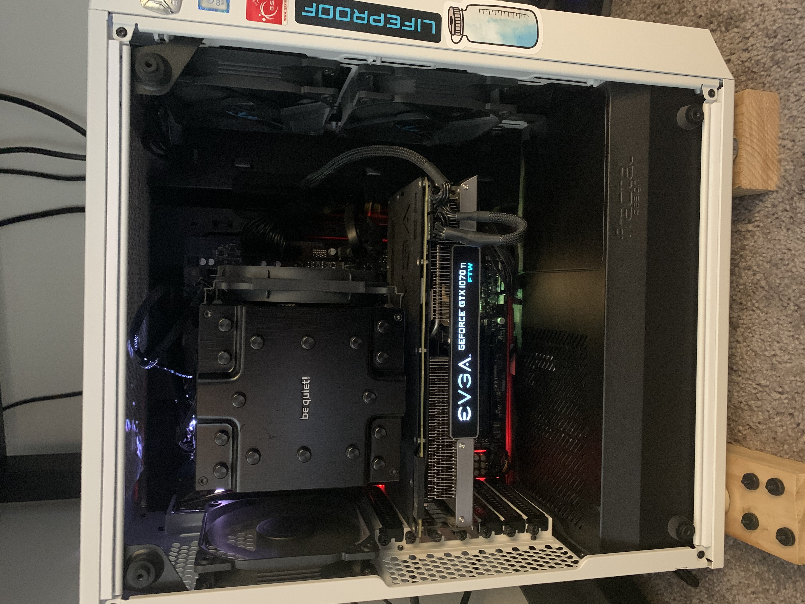

I love almost anything tech related. I've been playing video games since the ripe age of around 6 or 7 starting on a DS. Evolving to the line of Playstations and now a personally built PC. For a while as a kid I wanted to work on video games but I swiftly realized that I don't have the imagination for that line of work. But I still love anything tech and any advancements when it comes to technology. I hope one day maybe when I'm 80 we'll be able to play video games on quantum computers just to see if it's possible.
My favorite video games and series in no particular order include:
These are all of my parts for the PC I built with the help of a friend who also built his own PC. I built this PC just over two years ago as of now in November 2018. I'm currently in the process of helping my brother look for parts and help him build his PC too.
This is a picture of my PC taken recently. Looks like I need to take the canned air to it and get all that dust out of there.
